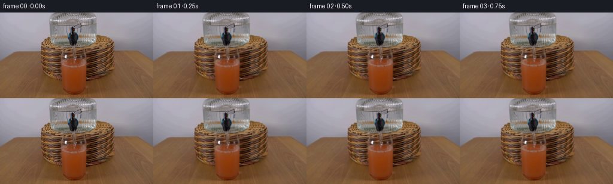
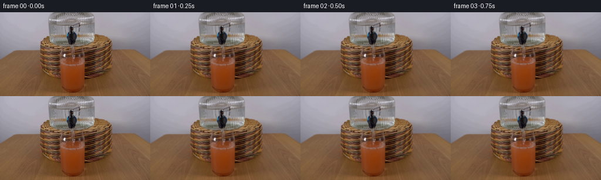
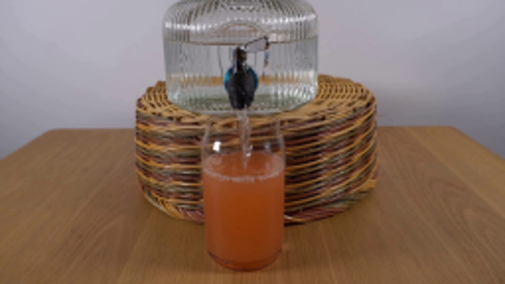
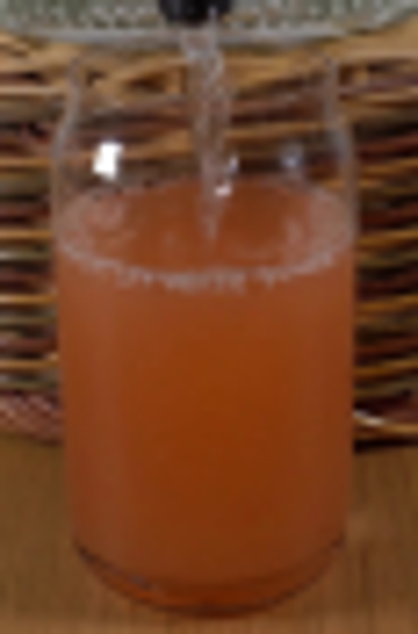
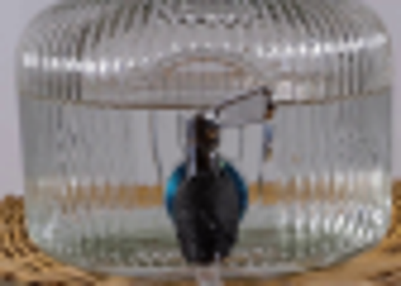
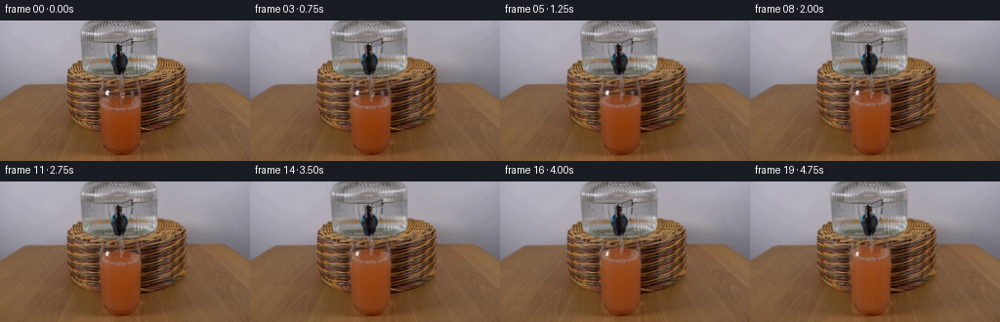
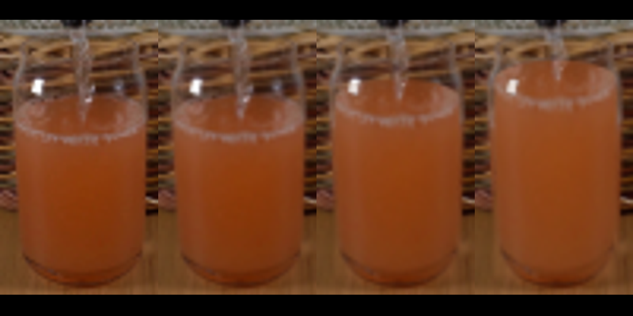
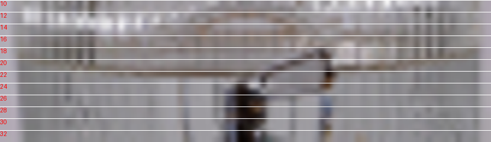

CODING AGENTS AS PIXEL WORLD MODELS
traex/GPT-6.1-Sol · 0185
点击播放 · 原生 RGB 像素
逐轮保存的候选
回放视频、检查图与代码变化。
每份候选均可单独播放。实际图片检查记录在下方工具轨迹中。
候选 01播放与检查图
点击播放 · 原生 RGB 像素


展开代码变化
--- 上一保存版本
+++ 本次保存版本
@@ -0,0 +1,119 @@
+from pathlib import Path
+import numpy as np
+import cv2
+from PIL import Image
+from scipy.ndimage import gaussian_filter, map_coordinates
+import artifact_io
+
+ROOT=Path(__file__).resolve().parent
+S=4
+base0=np.array(Image.open(ROOT/'first_frame.png').convert('RGB'))
+H,W=144*S,256*S
+base=cv2.resize(base0.astype(np.float32),(W,H),interpolation=cv2.INTER_CUBIC)
+y,x=np.mgrid[0:H,0:W].astype(np.float32)
+x=(x+.5)/S-.5; y=(y+.5)/S-.5
+
+def smooth(a,b,v):
+ v=np.clip((v-a)/(b-a),0,1)
+ return v*v*(3-2*v)
+
+def sample(im,xx,yy):
+ return cv2.remap(im, ((xx+.5)*S-.5).astype(np.float32), ((yy+.5)*S-.5).astype(np.float32), cv2.INTER_CUBIC,borderMode=cv2.BORDER_REFLECT_101)
+
+# The already-running clear water jet is the only moving object above the glass.
+# Remove its old position to obtain the stationary scene seen through the jet.
+jetmask=np.zeros((H,W),np.uint8)
+points=np.array([(120.6,55.3),(124.1,55.3),(125.8,65.5),(127.1,73),(125.3,79.5),(124.2,84),(121.5,84),(120.9,76),(121.1,71),(120.6,66)],np.float32)
+cv2.fillPoly(jetmask,[np.round((points+.5)*S-.5).astype(np.int32)],255)
+clean=cv2.inpaint(np.clip(base,0,255).astype(np.uint8),jetmask,3.0*S,cv2.INPAINT_TELEA).astype(np.float32)
+jetalpha=gaussian_filter(jetmask.astype(np.float32)/255,.40*S)
+jetdiff=(base-clean)*jetalpha[...,None]
+
+
+def render(i):
+ if i==0:return base0.copy()
+ t=i/4
+ # A fixed flow raises the level, while mixing progressively dilutes the juice.
+ rise=2.68*t
+ center=84.35-rise
+ rx=20.35-.065*rise
+ ry=6.5-.014*rise
+ dx=(x-123.05)/rx
+ root=np.sqrt(np.clip(1-dx*dx,0,1))
+ back=center-ry*root
+ front=center+ry*root
+ side=(1-smooth(.94,1.04,np.abs(dx)))
+ top=smooth(-.65,.7,y-back)
+ bottom=1-smooth(132.0,136.1,y)
+ wet=side*top*bottom
+ # Stretch only the photographed liquid. The fixed glass rim and foot stay put.
+ yy=84.35+(y-center)*(134.5-84.35)/(134.5-center)
+ xx=123.05+(x-123.05)*20.35/rx
+ # Very small underwater optical disturbance from the impinging stream.
+ dist=np.sqrt(((x-123)/1.2)**2+((y-center)/.9)**2)
+ disturb=.20*np.sin(.8*dist-10*t)*np.exp(-dist/16)*smooth(center-2,center+7,y)
+ liquid=sample(base,xx+disturb,yy+.12*np.sin(x*.6+t*6)*np.exp(-np.abs(y-center)/15))
+ # The color lightens naturally, with stronger dilution in the mixing plume.
+ underwater=smooth(center+3,center+10,y)
+ plume=np.exp(-((x-123.0-.8*np.sin((y-center)*.18+t*1.5))/(2.5+(y-center)*.13))**2)*np.exp(-np.maximum(y-center,0)/42)
+ mix=(rise/49.0)*(.58+.24*plume)
+ light=np.array([184,123,74],np.float32)
+ liquid=liquid*(1-mix[...,None])+light*mix[...,None]
+ # Preserve the stationary lighting gradient and glass-edge translucency.
+ im=clean.copy()
+ im=im*(1-wet[...,None])+liquid*wet[...,None]
+ # Keep the actual front wall's narrow photographic specular marks in place.
+ high=base-gaussian_filter(base,(1.5*S,1.5*S,0))
+ spec=np.clip((base.mean(2)-110)/45,0,1)*smooth(103,108,x)*(1-smooth(113,116,x))*(1-smooth(78,80,y))*smooth(69,71,y)
+ spec+=.6*np.clip((base.mean(2)-107)/55,0,1)*smooth(132,135,x)*(1-smooth(139,142,x))*smooth(68,72,y)*(1-smooth(79,82,y))
+ spec=np.clip(spec,0,.78)*wet
+ im=im*(1-spec[...,None])+base*spec[...,None]
+
+ # Falling liquid is refractive, irregular, and vertically motion-blurred.
+ length=center-55.4
+ sy=55.4+(y-55.4)*(84.0-55.4)/length
+ shift=.27*np.sin((y-55.4)*.73-12.8*t)+.15*np.sin(y*1.57-19.1*t)
+ sx=x-shift
+ j=sample(jetdiff,sx,sy)
+ jm=sample(jetalpha,sx,sy)
+ gate=smooth(54.8,56,y)*(1-smooth(center-.8,center+1.8,y))
+ im+=j*gate[...,None]
+ # Small flowing lenses produce a changing bright edge, not an opaque white rod.
+ xc=122.4+shift+.26*np.sin((y-57)*.2)
+ along=np.sin((y-55)*2.2-28*t)+.4*np.sin((y-55)*4.1-42*t)
+ edge=np.exp(-((x-xc-1.03)/.38)**2)*(.35+.30*along)
+ core=np.exp(-((x-xc+.10)/.70)**2)
+ jetregion=smooth(55.0,56.8,y)*(1-smooth(center-1,center+1,y))
+ im+=(edge*12-core*3.3)[...,None]*jetregion[...,None]
+ # Animated surface ripples, strongest just beside the falling jet.
+ ex=(x-123.05); ey=(y-center)/.31
+ radial=np.sqrt(ex*ex+ey*ey)
+ surfmask=side*smooth(back-.15,back+1,y)*(1-smooth(front-.3,front+.6,y))
+ wave=(np.sin(radial*1.55-15.0*t)+.35*np.sin(radial*2.8-19*t))*np.exp(-radial/14)
+ im+=wave[...,None]*surfmask[...,None]*np.array([2.8,3.1,2.7])
+ # Minute aerated flecks and outward-moving bubbles on the meniscus.
+ bubble=np.zeros((H,W),np.float32)
+ for k in range(26):
+ age=(t+(k*0.173))%.95
+ theta=k*2.399+ .2*np.sin(t*2+k)
+ r=2.5+age*15.5
+ bx=123.0+r*np.cos(theta)
+ by=center+.305*r*np.sin(theta)
+ br=.18+.12*np.sin(k*12.31)**2
+ dd=((x-bx)/br)**2+((y-by)/(br*.62))**2
+ bubble+=np.exp(-dd*1.5)*(.5+.5*np.sin(np.pi*age/.95))
+ bubble*=surfmask*min(1,t*2)
+ im+=bubble[...,None]*np.array([28,29,26])
+ impact=np.exp(-((x-122.8)/2.0)**2-((y-center+.3)/.9)**2)
+ im+=impact[...,None]*np.array([6.0,7.4,7.2])*(.6+.3*np.sin(t*21))
+ # Thin moving glints in the bowl and aeration just below the water surface.
+ for k in range(8):
+ age=(t+k*.251)%1.45
+ bx=123+np.sin(k*9.3)*(.7+age*2.8)
+ by=center+1.5+age*6
+ b=np.exp(-((x-bx)/.18)**2-((y-by)/.38)**2)*np.sin(np.pi*age/1.45)*.25
+ im+=b[...,None]*np.array([26,30,24])*wet[...,None]
+ return np.clip(cv2.resize(im,(256,144),interpolation=cv2.INTER_AREA),0,255).round().astype(np.uint8)
+
+frames=np.stack([render(i) for i in range(20)])
+artifact_io.save(frames,ROOT)
候选 02播放与检查图
点击播放 · 原生 RGB 像素


展开代码变化
--- 上一保存版本
+++ 本次保存版本
@@ -28,6 +28,7 @@
clean=cv2.inpaint(np.clip(base,0,255).astype(np.uint8),jetmask,3.0*S,cv2.INPAINT_TELEA).astype(np.float32)
jetalpha=gaussian_filter(jetmask.astype(np.float32)/255,.40*S)
jetdiff=(base-clean)*jetalpha[...,None]
+jar_low=gaussian_filter(base,(.65*S,.50*S,0))
def render(i):
@@ -61,6 +62,15 @@
liquid=liquid*(1-mix[...,None])+light*mix[...,None]
# Preserve the stationary lighting gradient and glass-edge translucency.
im=clean.copy()
+ # Conservation of volume also gently lowers the dispenser's waterline.
+ # Its vertical glass fluting, metal lever, and faucet remain fixed.
+ drop=rise*.24
+ jar_warp=smooth(15,20,y)*(1-smooth(29,39,y))
+ shifted=sample(jar_low,x,y-drop*jar_warp)
+ jmask=smooth(83,86,x)*(1-smooth(157,161,x))*smooth(15,18,y)*(1-smooth(33,39,y))
+ foreground=smooth(112,116,x)*(1-smooth(137,140,x))*smooth(16,18,y)
+ jmask*=1-foreground
+ im+=(shifted-jar_low)*jmask[...,None]
im=im*(1-wet[...,None])+liquid*wet[...,None]
# Keep the actual front wall's narrow photographic specular marks in place.
high=base-gaussian_filter(base,(1.5*S,1.5*S,0))
可观测工具轨迹
实际执行的命令与返回图片。
命令 1exit 0
/bin/bash -lc "cat prompt.txt && printf '\\n---RULES---\\n' && cat GENERATION_RULES.md && printf '\\n---FILES---\\n' && ls -la"
命令 2exit 0
/bin/bash -lc "cat artifact_io.py && python - <<'PY'
from PIL import Image
im=Image.open('first_frame.png')
print(im.size)
im.resize((1024,576)).save('.tmp/first_large.png')
PY"命令 3exit 0
/bin/bash -lc "python - <<'PY'
from PIL import Image
im=Image.open('first_frame.png')
im.crop((95,52,153,140)).resize((464,704)).save('.tmp/glass.png')
im.crop((79,0,163,60)).resize((672,480)).save('.tmp/jar.png')
PY"命令 4exit 0
/bin/bash -lc "python - <<'PY'
from PIL import Image
im=Image.open('first_frame.png')
im.resize((1280,720),Image.Resampling.NEAREST).save('.tmp/nearest.png')
PY"命令 5exit 0
/bin/bash -lc "python - <<'PY'
from PIL import Image,ImageDraw
im=Image.open('first_frame.png').resize((1024,576))
d=ImageDraw.Draw(im)
for y in range(55,141,5):
d.line((390,y*4,590,y*4),fill=(230,230,230),width=1);d.text((590,y*4-5),str(y),fill='white')
for x in [102,107,112,117,122,127,132,137,142]:
d.line((x*4,240,x*4,560),fill=(100,180,200),width=1);d.text((x*4-8,225),str(x),fill='white')
im.save('.tmp/grid.png')
PY"命令 6exit 0
/bin/bash -lc "python - <<'PY'
import numpy,scipy,PIL
try:
import cv2;print('cv2',cv2.__version__)
except: pass
PY"命令 7exit 0
/bin/bash -lc "cat > generate.py <<'PY'
from pathlib import Path
import numpy as np
import cv2
from PIL import Image
from scipy.ndimage import gaussian_filter, map_coordinates
import artifact_io
ROOT=Path(__file__).resolve().parent
S=4
base0=np.array(Image.open(ROOT/'first_frame.png').convert('RGB'))
H,W=144*S,256*S
base=cv2.resize(base0.astype(np.float32),(W,H),interpolation=cv2.INTER_CUBIC)
y,x=np.mgrid[0:H,0:W].astype(np.float32)
x=(x+.5)/S-.5; y=(y+.5)/S-.5
def smooth(a,b,v):
v=np.clip((v-a)/(b-a),0,1)
return v*v*(3-2*v)
def sample(im,xx,yy):
return cv2.remap(im, ((xx+.5)*S-.5).astype(np.float32), ((yy+.5)*S-.5).astype(np.float32), cv2.INTER_CUBIC,borderMode=cv2.BORDER_REFLECT_101)
# The already-running clear water jet is the only moving object above the glass.
# Remove its old position to obtain the stationary scene seen through the jet.
jetmask=np.zeros((H,W),np.uint8)
points=np.array([(120.6,55.3),(124.1,55.3),(125.8,65.5),(127.1,73),(125.3,79.5),(124.2,84),(121.5,84),(120.9,76),(121.1,71),(120.6,66)],np.float32)
cv2.fillPoly(jetmask,[np.round((points+.5)*S-.5).astype(np.int32)],255)
clean=cv2.inpaint(np.clip(base,0,255).astype(np.uint8),jetmask,3.0*S,cv2.INPAINT_TELEA).astype(np.float32)
jetalpha=gaussian_filter(jetmask.astype(np.float32)/255,.40*S)
jetdiff=(base-clean)*jetalpha[...,None]
def render(i):
if i==0:return base0.copy()
t=i/4
# A fixed flow raises the level, while mixing progressively dilutes the juice.
rise=2.68*t
center=84.35-rise
rx=20.35-.065*rise
ry=6.5-.014*rise
dx=(x-123.05)/rx
root=np.sqrt(np.clip(1-dx*dx,0,1))
back=center-ry*root
front=center+ry*root
side=(1-smooth(.94,1.04,np.abs(dx)))
top=smooth(-.65,.7,y-back)
bottom=1-smooth(132.0,136.1,y)
wet=side*top*bottom
# Stretch only the photographed liquid. The fixed glass rim and foot stay put.
yy=84.35+(y-center)*(134.5-84.35)/(134.5-center)
xx=123.05+(x-123.05)*20.35/rx
# Very small underwater optical disturbance from the impinging stream.
dist=np.sqrt(((x-123)/1.2)**2+((y-center)/.9)**2)
disturb=.20*np.sin(.8*dist-10*t)*np.exp(-dist/16)*smooth(center-2,center+7,y)
liquid=sample(base,xx+disturb,yy+.12*np.sin(x*.6+t*6)*np.exp(-np.abs(y-center)/15))
# The color lightens naturally, with stronger dilution in the mixing plume.
underwater=smooth(center+3,center+10,y)
plume=np.exp(-((x-123.0-.8*np.sin((y-center)*.18+t*1.5))/(2.5+(y-center)*.13))**2)*np.exp(-np.maximum(y-center,0)/42)
mix=(rise/49.0)*(.58+.24*plume)
light=np.array([184,123,74],np.float32)
liquid=liquid*(1-mix[...,None])+light*mix[...,None]
# Preserve the stationary lighting gradient and glass-edge translucency.
im=clean.copy()
im=im*(1-wet[...,None])+liquid*wet[...,None]
# Keep the actual front wall's narrow photographic specular marks in place.
high=base-gaussian_filter(base,(1.5*S,1.5*S,0))
spec=np.clip((base.mean(2)-110)/45,0,1)*smooth(103,108,x)*(1-smooth(113,116,x))*(1-smooth(78,80,y))*smooth(69,71,y)
spec+=.6*np.clip((base.mean(2)-107)/55,0,1)*smooth(132,135,x)*(1-smooth(139,142,x))*smooth(68,72,y)*(1-smooth(79,82,y))
spec=np.clip(spec,0,.78)*wet
im=im*(1-spec[...,None])+base*spec[...,None]
# Falling liquid is refractive, irregular, and vertically motion-blurred.
length=center-55.4
sy=55.4+(y-55.4)*(84.0-55.4)/length
shift=.27*np.sin((y-55.4)*.73-12.8*t)+.15*np.sin(y*1.57-19.1*t)
sx=x-shift
j=sample(jetdiff,sx,sy)
jm=sample(jetalpha,sx,sy)
gate=smooth(54.8,56,y)*(1-smooth(center-.8,center+1.8,y))
im+=j*gate[...,None]
# Small flowing lenses produce a changing bright edge, not an opaque white rod.
xc=122.4+shift+.26*np.sin((y-57)*.2)
along=np.sin((y-55)*2.2-28*t)+.4*np.sin((y-55)*4.1-42*t)
edge=np.exp(-((x-xc-1.03)/.38)**2)*(.35+.30*along)
core=np.exp(-((x-xc+.10)/.70)**2)
jetregion=smooth(55.0,56.8,y)*(1-smooth(center-1,center+1,y))
im+=(edge*12-core*3.3)[...,None]*jetregion[...,None]
# Animated surface ripples, strongest just beside the falling jet.
ex=(x-123.05); ey=(y-center)/.31
radial=np.sqrt(ex*ex+ey*ey)
surfmask=side*smooth(back-.15,back+1,y)*(1-smooth(front-.3,front+.6,y))
wave=(np.sin(radial*1.55-15.0*t)+.35*np.sin(radial*2.8-19*t))*np.exp(-radial/14)
im+=wave[...,None]*surfmask[...,None]*np.array([2.8,3.1,2.7])
# Minute aerated flecks and outward-moving bubbles on the meniscus.
bubble=np.zeros((H,W),np.float32)
for k in range(26):
age=(t+(k*0.173))%.95
theta=k*2.399+ .2*np.sin(t*2+k)
r=2.5+age*15.5
bx=123.0+r*np.cos(theta)
by=center+.305*r*np.sin(theta)
br=.18+.12*np.sin(k*12.31)**2
dd=((x-bx)/br)**2+((y-by)/(br*.62))**2
bubble+=np.exp(-dd*1.5)*(.5+.5*np.sin(np.pi*age/.95))
bubble*=surfmask*min(1,t*2)
im+=bubble[...,None]*np.array([28,29,26])
impact=np.exp(-((x-122.8)/2.0)**2-((y-center+.3)/.9)**2)
im+=impact[...,None]*np.array([6.0,7.4,7.2])*(.6+.3*np.sin(t*21))
# Thin moving glints in the bowl and aeration just below the water surface.
for k in range(8):
age=(t+k*.251)%1.45
bx=123+np.sin(k*9.3)*(.7+age*2.8)
by=center+1.5+age*6
b=np.exp(-((x-bx)/.18)**2-((y-by)/.38)**2)*np.sin(np.pi*age/1.45)*.25
im+=b[...,None]*np.array([26,30,24])*wet[...,None]
return np.clip(cv2.resize(im,(256,144),interpolation=cv2.INTER_AREA),0,255).round().astype(np.uint8)
frames=np.stack([render(i) for i in range(20)])
artifact_io.save(frames,ROOT)
PY
python generate.py"命令 8exit 0
/bin/bash -lc "python - <<'PY'
from PIL import Image
im=Image.new('RGB',(800,400))
for k,i in enumerate([0,1,10,19]):
a=Image.open(f'frames/{i:02d}.png').crop((98,53,148,140)).resize((200,348))
im.paste(a,(k*200,25))
im.save('.tmp/glass_progress.png')
PY"命令 9exit 0
/bin/bash -lc "python - <<'PY'
from PIL import Image,ImageDraw
im=Image.open('first_frame.png').crop((80,10,163,34)).resize((830,240))
d=ImageDraw.Draw(im)
for y in range(10,34,2):
d.line((0,(y-10)*10,830,(y-10)*10),fill='white',width=1);d.text((0,(y-10)*10),str(y),fill='red')
im.save('.tmp/jar_lines.png')
PY"命令 10exit 0
/bin/bash -lc "python - <<'PY'
import numpy as np
from PIL import Image
im=np.array(Image.open('first_frame.png'))
for x1,x2 in [(86,98),(99,113),(142,157)]:
print(x1,x2)
for y in range(15,28):print(y,im[y,x1:x2].mean(0).round(1))
PY"命令 11exit 0
/bin/bash -lc "python generate.py && python - <<'PY'
import numpy as np
from PIL import Image
z=np.load('pixels.npz')['pixels']
a=np.array(Image.open('frames/00.png'));b=np.array(Image.open('first_frame.png'))
assert np.array_equal(a,b)
print('Validated:',z.shape,'20 frames, first frame identical.')
PY"视觉工具实际返回图片 1

视觉工具实际返回图片 2

视觉工具实际返回图片 3

视觉工具实际返回图片 4
视觉工具实际返回图片 5
视觉工具实际返回图片 6

视觉工具实际返回图片 7

视觉工具实际返回图片 8

视觉工具实际返回图片 9
保存候选 2 份；完成命令 11 次；可验证图片返回 9 张。原始 API 响应与完整日志保留在本地。